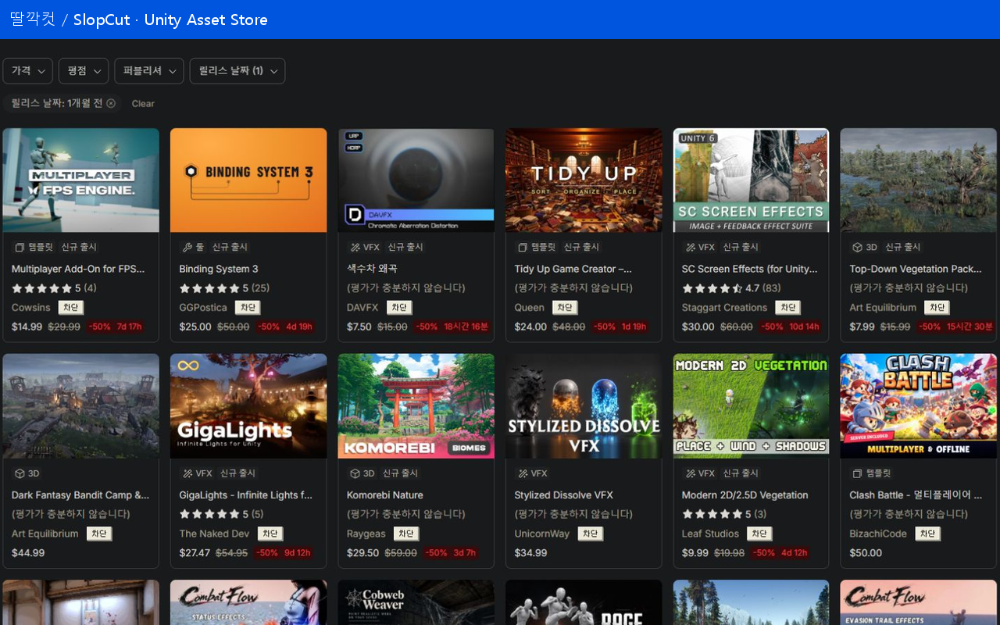
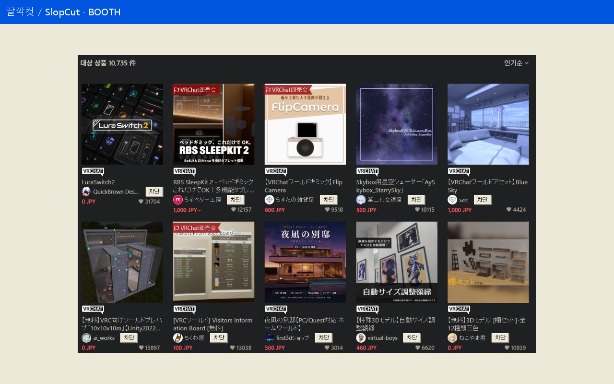
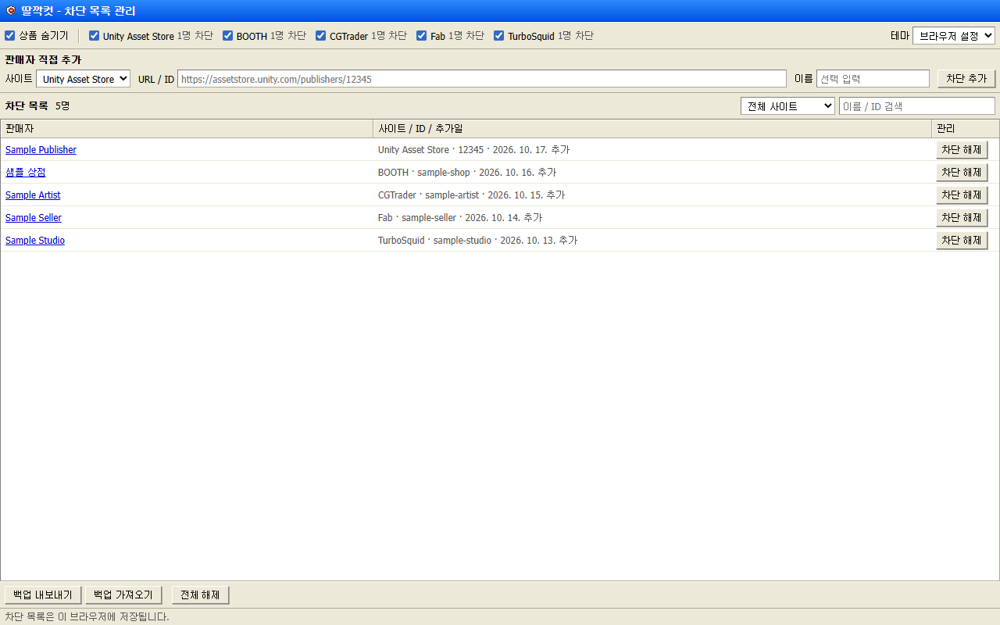
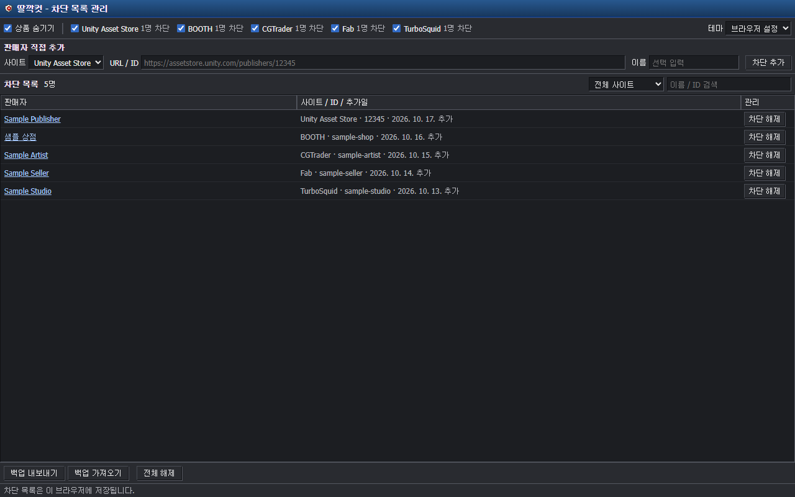
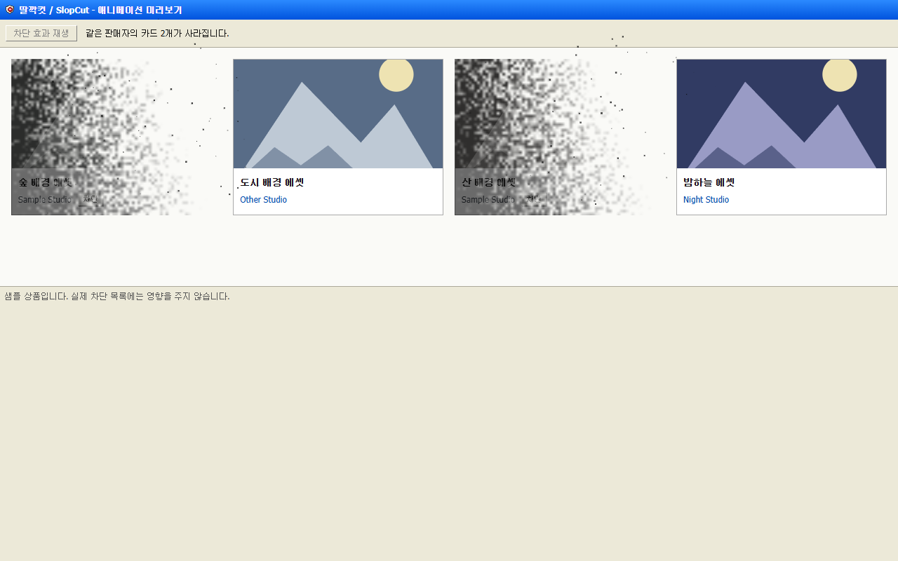

딸깍컷 / SlopCut 1.6.0 · 공개 및 심사 제출 전 검토 자료입니다.
제출 안내 · 한국어 소개 · English listing · 개인정보처리방침 · 공개자·라이선스 정보
01-unity.png

02-booth.png

03-management-light.png

04-management-dark.png

05-dust-demo.png

애니메이션 직접 재생 · 캡처 출처